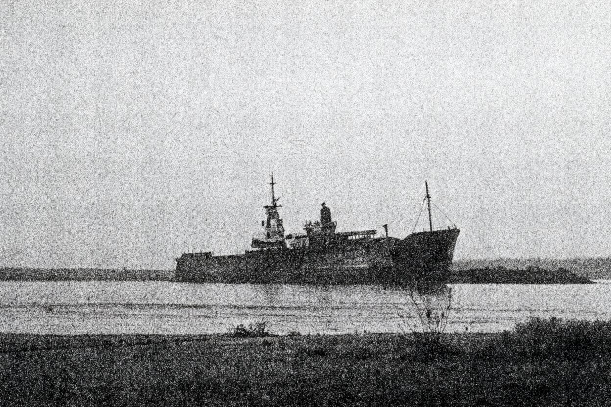

Від нашого кореспондента. Очаків

В ніч на п'ятницю біля Очаківської коси сів на мілину суховантаж «Ліман Стар» під прапором Белізу, що йшов із Варни до Миколаєва в баласті. Судно, власником якого є одеська компанія, лежить на так званій Вовчій банці неподалік від берега й, за попередніми даними, має пробоїни корпусу.
Як розповіли нашому кореспондентові в Очакові члени екіпажу, з якими вдалося поговорити в п'ятницю вдень, причиною аварії могла стати робота навігаційного вогню. За словами моряків, маяк «світив не як слід, а то й зовсім не світив». Судноводії, кажуть вони, довго не могли визначити, який саме вогонь бачать перед собою, а коли зрозуміли — було пізно.
Начальник Очаківського району гідрографічної служби А. Дубовик категорично відхиляє такі припущення. «Маяк працював бездоганно», — заявив він нашому кореспондентові по телефону, додавши, що вахтовий журнал і доповіді чергового це підтверджують.
Під час висадки екіпажу на берег шлюпкою зник другий помічник капітана. Пошуки тривають, у них беруть участь прикордонники й рибалки з сусіднього села.
Судновласник, за інформацією з екіпажу, має намір звернутися до страховика. Хто в цій історії правий, а хто винен, покаже слідство. Ми стежитимемо за подіями.
| 1 долар США | 3,43 грн |
| 1 німецька марка | 2,05 грн |
| 1 російський рубль | 0,17 грн |
| 100 російських рублів (ринок) | 17,0 грн |
Субота: хмарно, місцями мряка, вітер південно-західний 12–15 м/с, поступово слабне. Вдень +6, вночі +3. Неділя: без істотних опадів, вітер 5–8 м/с, +5…+7. На морі хвилювання 4–5 балів, до неділі стихне.
На Дерибасівській відкрили піцерію. У п'ятницю біля колишнього кінотеатру почав працювати заклад італійської кухні на сорок місць. Піца від 6 гривень, обіцяють доставку додому.
«Привіз» готується до зими. На ринку відкрито критий павільйон; м'ясні ряди працюють до шостої вечора.
| УТ-1 | 08.00 «Ранок». 12.30 «Сільські вісті». 20.00 «Вікна-новини» |
| 1+1 | 18.30 «Вікна». 19.30 Художній фільм |
| ОДТРК | 19.00 «Одеські новини». 21.15 Концерт |
Футбол. Футболісти одеського «Чорноморця» завершили осінню частину сезону і йдуть на перерву. Тренерська рада підбиває підсумки. Шахи. В Одесі стартував відкритий турнір пам'яті Гольдберга.